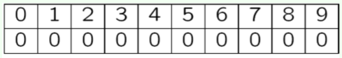
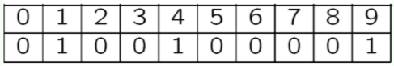
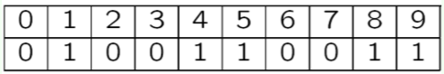

Bloom Filter
布隆过滤器是一个具有空间性的概率数据结构，通常用来判断一个元素是否存在于一个集合中。
布隆过滤器的性质
- 纳伪 False Positive是可能的，对于一个不在布隆过滤器中的元素（事件A: 元素不在布隆过滤器中），可能返回存在（拒绝事件A: 返回存在）
- 拒真 False Negative是不可能的，如果布隆过滤器返回不存在，那么一定不存在
假设检验的两种错误类型
| 真实情况 | |||
|---|---|---|---|
| 事件A是真实的 | 事件A不是真实的 | ||
| 根据研究结果的判断 | 拒绝事件A |
错误判断 False Positive(纳伪,type1-error) |
正确判断 |
| 接受事件A | 正确判断 |
错误判断 False Negative(拒真,type2-error) |
|
布隆过滤器的应用
- 垃圾邮件分类
- 拼写检查
- 重复检查/抄袭检验
- 减少磁盘I/O次数：使用布隆过滤器查找，以减少磁盘I/O次数
- URL去重：爬取网页时避免爬取相同的URL
- 解决缓存穿透问题：缓存穿透是指访问根本不存在的数据，即缓存和存储层都不存在，但是导致每一次访问都要去访问存储层。如果黑客故意大量的访问不存在的数据，会导致每次访问都去访问底层存储区造成缓存和数据库宕机，因此考虑将key加到布隆过滤器中，当黑客访问不存在的缓存时能够迅速做出判断
实例
假设集合S中有 n 个元素，并且有 k 个Hash函数h1，h2，h3，...，hk，其值域为{1，2，3，...，m}，最开始，m位的数组中每个比特位都是0.
以集合{x, y, z}为例，相同颜色的箭头表示一个元素经 k 个Hash函数hash之后的位置，在这里，m=18，k=3.

以一个大小为10，哈希函数个数为3的布隆过滤器为例。定义H(x)为经过三个哈希函数哈希之后得到的哈希值的集合{h1(x), h2(x), h3(x)}.
以10个空比特位初始化

插入x0，其中H(x0)={1, 4, 9}

插入x1，其中H(x1)={4, 5, 8}

查询
- H(y0)={4, 5, 8}，存在
- H(y1)={0, 4, 8}，不存在(位置0不为1)
- H(y2)={1, 5, 8}，存在（False Positive）
纳伪率 False Positive Rate
插入一个元素时，经一次hash后某一位没有被置为1的概率为 \[ 1-\dfrac{1}{m} \] 经过 k 次hash之后，该位仍没有被置为1的概率为 \[ \left(1-\dfrac{1}{m}\right)^k \] 插入 n 个元素后，该位仍为0 的概率为 \[ \left(1-\dfrac{1}{m}\right)^{kn} \] 所以，该位为1的概率为 \[ 1-\left(1-\dfrac{1}{m}\right)^{kn} \] 对于测试集中的一个元素，如果经过 k 次 hash 之后每一位在布隆过滤器中都为1，则认为该元素存在于布隆过滤器中。因此，发生False Positive的概率为 \[ f = \left(1-\left(1-\dfrac{1}{m}\right)^{kn}\right)^k \approx \left(1-e^{-\frac{kn}{m}}\right)^k \]
- 纳伪率随着布隆过滤器大小m的增大而减小
- 随着插入的元素数量n的增大而增大
哈希函数个数的选择
对于给定的 m 和 n，我们通过选择一个合适的 k 来最小化纳伪率。令 \(\rho=e^{-kn/m}\)，则 \[ \begin{align*} f &\approx (1-e^{-kn/m})^k \\ &= (1-\rho)^k\\ &= e^{k\ln(1-\rho)} \end{align*} \] 现在我们要最小化 \(g = kln(1-\rho)\)，记 \(ln \rho = ln e^{-kn/m} = -\frac{kn}{m}\)，则 \[ g = k \ln(1-\rho) = -\dfrac{m}{n}\ln(\rho)\ln(1-\rho) \] 因此，当 \(\rho = \dfrac{1}{2}\) 时，g 取最小值，此时 \[ \rho = e^{-kn/m} = \dfrac{1}{2}\\ k = \ln2 \cdot (\frac{m}{n})\\ f = (1-\rho)^k = \left(\frac{1}{2}\right)^k \approx (0.6185)^{\frac{m}{n}} \] 此时我们认为此时的布隆过滤器处于最优状态，注意到 \(\rho\) 也是位数组中某一位为0 的概率，这表明想要保持较低误判率，位数组中最好有一半的位置为空，称为半满布隆过滤器 half-full Bloom Filter.
?为什么是半满的布隆过滤器
- 如果布隆过滤器中的空值太少，那么发生碰撞的概率会增高
- 如果空值太多，说明选择的Hash Function数量太少，因此也会使得碰撞的概率增加，毕竟多个Hash Function都碰撞的概率要比一个Hash Function发生碰撞的概率要低得多
位数组大小的设置
考虑在不超过一定误判率 \(\epsilon\) 的情况下，布隆过滤器至少需要多少位m才能表示全集N中任意包含n个元素的子集？
对于一个布隆过滤器，除需要容纳 n 个元素之外，还需要容纳至少 \(\epsilon\)(N-n) 个误判元素。那么对于一个确定容量的位数组，它共需要接受 \(n+\epsilon (N-n)\) 个元素。所以一个确定容量的位数组可以表示 \[ {n+\epsilon(N-n) \choose n} \] 个集合。而容量为 m 的位数组共有 \(2^m\) 个不同的组合，进一步地，m位的位数组可以表示 \[ 2^m {n+\epsilon(N-n) \choose n} \qquad \text{不甚明白？为什么要乘起来？} \] 个集合。
\({n+\epsilon(N-n) \choose n}\) 表示一个内容确定的位数组可以表示的已插入布隆过滤器的元素集合的种类数量，\(2^m\)表示一个m为的位数组可以表示的确定的位数组的个数，因此两者乘积即表示一个m位的位数组可以表示的元素集合的数量.
全集中 n 个元素的集合共有 \[ {N \choose n} \] 个，因此，要让容量位 m 位的位数组能够表示所有包含 n 个元素的子集，必须满足以下不等式 \[ 2^m {n+\epsilon(N-n) \choose n} \geqslant {N \choose n} \] 当 \(n \ll \epsilon N\) 时，上式近似为 \[ m \geqslant \log_2 \dfrac{ {N \choose n} }{ {n+\epsilon (N-n) \choose n} } \approx \log_2 \dfrac{ {N \choose n} }{ {\epsilon N \choose n} } \geqslant \log_2 \epsilon^{-n} = -n\log_2 \epsilon \]
- 结论一：在错误率不大于 \(\epsilon\) 的情况下，m 至少等于 \(-nlog_2 \epsilon\) 才能表示任意包含 n 个元素的子集
进一步考虑，在采用最优哈希函数个数的情况下位数组的大小，令 \(f \leqslant \epsilon\)，即 \[ f \approx (1-e^{-kn/m})^k = (1-\rho)^k = \left(\dfrac{1}{2}\right)^{\frac{m}{n}ln2} \leqslant \epsilon \\ m \geqslant -\dfrac{n \ln \epsilon}{(\ln 2)^2} \quad or \quad m \geqslant -\dfrac{n\log_2 \epsilon}{\ln 2} \approx -1.44n\log_2 \epsilon \]
- 结论二：若采用最优哈希函数的个数，那么位数组大小 m 应该是 \(-n \log_2 \epsilon\) 的1.44倍
总结
可以根据以下两个公式来选择哈希函数的个数 k 和位数组的大小 m： \[ m = -\dfrac{n \ln \epsilon}{(\ln 2)^2} \quad \left(\text{or} \quad m = -\dfrac{n\log_2 \epsilon}{\ln 2} \approx -1.44n\log_2 \epsilon\right) \]
\[ k = \frac{m}{n} \ln 2 \]